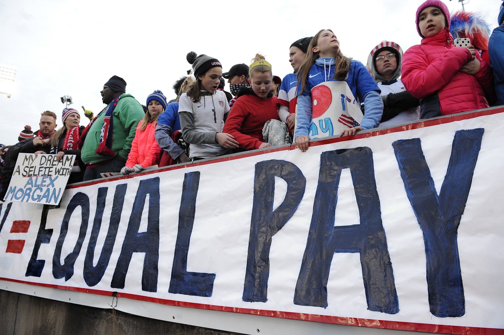

Child Marriage
Location - Currently, India, Bangladesh, Nigeria, and Brazil have the highest number of female-child marriages.
Challenge - Child marriage is a prominent international problem, especially in developing nations in Africa and Asia. Each year, 15 million girls are married off before the age of 18. Girls who marry are not only denied their childhood, but also socially isolated – cut off from family and friends – with limited opportunities for education and employment.
Overcoming it! - Globally, governments are taking initiatives to urge their citizens to forsake child marriage. Recently, 14 year old Santana Murmu in West Bengal, India was forced to end her education early and get married. Her family stopped supporting her education after marriage, however, Murmu broke the norms and continued her education after getting married and having 3 children. She is now a volunteer for the Child In Need Institute (CINI) and is empowering child brides around the world to take a stand against their situation
Article:
National Geographic

Gender Wage Gap
Location - Worldwide.
Challenge - The median wage for women is about 80% of the median wage for men. This may be due gender bias against women because of maternity leave. Many women have to leave the workforce or take a significant leave from work in order to give birth and take care of their young children.
Overcoming It! - One of the main causes for gender bias against women is as a result of maternity leave and mothers having to leave work in order to care for their child. However, paternity leave and fathers taking a more active role in parenthood has helped relieve the workload and allowed women to return to their jobs more quickly. Improved child care would not only help omen, but it would help all working parents.
Sexual Assult
Location - Worldwide
Challenge - One in five women will become victims of sexual assault at some point in their lives. Many times, victims of sexual assault are too afraid to report what happened to them and/or will blame themselves. This was especially noted with the testimony by Dr. Christine Blasey Ford against Brett Kavanaugh was a compelling case displaying how difficult it is to come forward with allegations. At times, people doubt womens’ accusations or complaints, which only feeds into this problem.
Overcoming It! - We need to spread awareness and help those who have been assaulted so that more people will be comfortable with revealing what has happened to them. In the United States, the a rise in movements such as #MeToo and #TimesUp bring awareness to such an issue and help encourage women to not remain silent. This start of movements will aid future generations of young men and women be educated and prevent future incidents of sexual assault.
Article:
Bustle
Statistics: NSVRC
Access to Education
Location - Worldwide.
Challenge - One of the biggest reasons children are denied education is because of their gender. If poverty forces a family to choose which of their children to put through school, girls are usually the ones forced to stay home and work. About 150 million girls worldwide are not enrolled in a school. In addition, some girls are forced to stay home because of a lack of appropriate menstrual hygiene education and products.
Overcoming It! - Firstly, there must be an availability of learning institutions in all areas. Furthermore, access to cost-free education would also be helpful in addressing this issue. Because of poverty, discrimination, inadequate quality of the education, etc., they are unable to learn basic skills/knowledge that would allow them to thrive in society. As such, improving access to education would help to end the cycle of poverty in which many children are trapped within.
Female Refugees
Location: Worldwide
Challenge - Germany has accepted many fleeing Afghanistan and Syrian migrants, with about 31% of them being women. However, the conditions of the refugee shelters place women at risk. The sleeping quarters, bathrooms, and showers are not separated by gender, which has lead to increase in cases of sexual assault and violence.
Overcoming It! - These recent events have angered many supporters of women’s rights and have led to many concerns from UNICEF about the quality of care towards Germany’s refugees. The disregard for the protection of Germany’s female refugees has aggravated many feminist, however Germany’s immigrations office is working to improve their conditions. As time goes on, the world will only become more globalized, so people need to learn to better accept diversity. As a society, we need to learn how to better accept not only women, but people from all forms of life.
Article:
Time
Women in Government/Leadership
Location - United States
Challenge - In the US, only about 20-25% of elected officials at the state and federal level are women. However, women represent half of the population and most frequently, female voters outnumber male ones. As such, women are not equally represented in the government. Furthermore, women in politics are typically scrutiny on their private lives. For instance, fashion choices of politically active women are often picked apart by the media. In patriarchal societies, it is difficult for women to gain any political power or leadership positions due to gender roles.
Overcoming It! - We need to encourage women to take on more leadership positions. In general, women lack self confidence relative to men. We need to help encourage women to participate and get involved with their community. Furthermore, in patriarchal societies, there is a need for aiding education of youths so that gender roles can be broken. We can see this change in leadership in America with the rise of active female politians such as Alexandria Ocasio-Cortez and the acceptance of transgender politicans. However, the wolrd needs to be reminded that everyone is equal.
Women In STEM
Location - Worldwide Education
Challenge - STEM plays a crucial role in all of our lives, especially in the 21st century. About 75% of girls are interested in STEM, but only 0.3% major in computer science. Because STEM fields are generally male-dominated, women/girls tend to steer away from them, and there continues to be a low representation of women in science and math fields.
Overcoming It! - Many females avoid taking the risks associated with getting into STEM. It is important to empower women, so they are more confident in their skills and choose to get into a rather dominant man’s field. Girls are using technology more than ever before, but not enough can imagine a job in it. Many young girls would benefit from female who have excelled in STEM, so they have role models like themselves to look up to. Organizations like Girls Who Code and Girls in Tech target young girls to improve female involvement and confidence in STEM.
Women's Rights
Location - Saudi Arabia
Challenge - In Saudi Arabia, women must ask for permission from men for basic daily actions. However, new legislation was passed in June of 2018 that allows women to hold driver’s licences. Before, families would need a male relative or driver in order to transport women.
Overcoming It! - Even though women are severely restricted in Saudi Arabia, relative to Western standards, the legalization of female drivers is a substantial step for women’s independence in Saudi Arabia. However, women still need permission from men to dress, to associate with non-related men, to travel or to receive health care in this country. With the ability to drive, women have finally been given the chance to do something for themselves, and this new legislation has provided a tremendous opportunity for the hope and future of women.
Article:
BBC
Stereotypes in Media
Location - News Around the World
Challenge - Stereotypes of what it means to be male or female is portrayed in most media targeting children. Products aimed at boys tend to be blue and relating to mechanics or action figures. Products aimed at girls are generally pink and are dolls or beauty accessories. Throughout history, depictions of women in movies/TV tend put them in romantic relationships, and often make it seem as though women are dependent on men. Media also illustrates a picture for an ideal woman, imposing beauty standards that often result in confidence issues among girls.
Overcoming it! - While gender-based marketing is effective for companies, it reinforces stereotypes, especially in the minds of young children. To combat these stereotypes, media must portray women as strong figures, who are no different from men. For example, in recent years, more women have starred in action movies like Wonder Woman and Captain Marvel. Furthermore, there is an increase of women in executive roles of the media industry can help defy gender stereotypes. This year, actresses, like Regina King, have pledged to work on sets made with at least 50% females.

Gender Identity
Location - Worldwide
Challenge - Intersexuality is a term used to describe when a person is born with a condition between the sexes. Approximately one person in two thousand is born with sex anatomy variation. Often, newborns receive gender reassignment surgery at a young age and must conform to either one of the two binary genders. Since it easier to remove than to add, most gender ambiguous newborn are transformed into girls. However, this may lead to psychological trauma later in life. Many intersexual girls more closely identify with the male gender or would have preferred to remain ambiguous.
Overcoming It! - The world is slowly growing more accepting of nonbinary and gender ambiguous individuals. Recently, Germany has allowed a third indeterminate gender option on legal forms for intersex individuals. Also, gender ambiguous newborns are not forced to undergo gender reassignment surgery in this country. The fight for gender equality does not only include working to improve conditions for women, but for people of all genders.
Article:
The New Yorker
Domestic Abuse
Location - Worldwide
Challenge - Approximately 1 in 4 adult women have been victims of physical violence from close intimate partners. Domestic abuse is especially prominent in poor african american families. Recently, domestic abuse has received more attention in the media as a result of the actions of the famous american football player, Ray Rice and his indefinite suspension from the NFL. However, domestic abuse has occurred whether the media recognizes it or not, and it is important to help victims of physical violence from intimate partners.
Overcoming It! - Often, women will not report domestic abuse because they are afraid of losing their partners. We need to encourage women to speak up and gain independence from their male providers. Women need to learn the difference between healthy and unhealthy relationships in order to prevent future cases of domestic abuse. Those who have been harmed need to learn how to stand up for themselves. In all, we as a society need to spread awareness of domestic abuse and help those who have been affected.
Article:
Time
Miscellaneous
For more info, follow one of these links:
UN Statistics
Peace Corps Statistics
"Gender Issues" Journal by Various Authors
Women Empowerment Analysis
Gender Inequality Statistics
Gender Inequality Index and Data
Gender Inequality Articles by UNESCO
The State of Gender Equality for US Adolescents

{kind=link}
{kind=link}
{kind=link}
{kind=link}
{kind=link}
{kind=link}
{kind=link}
{kind=link}
{kind=link}
{kind=link}
{kind=link}